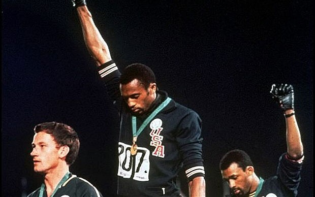

Olympic Medal Counts - Tracing the Rise and Fall of Global Superpowers

The Underdiscussed Reality of the Olympics
The Olympics are supposed to be about two things: promoting peace around the world by non-violent competition that is above politics, and exalting athletic achievement. No doubt most athletes enter Olympic competition with the latter in mind. But promoting peace seems to be about the last thing on the minds of the governments whose support for their national athletic structures has always been crucial to the success of their national participants.
This has of course been true from the very beginning. The famed originator of the modern Olympics, Baron de Coubertin, was born in 1863. He is said to have been brought up meditating on the national trauma most of the French suffered as a result of their defeat by the Germans in 1871. It seems he decided the defeat was the result of the lack of emphasis in French education on the importance of athletic skills, unlike in Great Britain and Germany, and he set about to rectify this.
As the years have gone by, national expenditures on Olympic preparation have steadily increased. Both winning the choice of site for the Olympic Games and winning the games themselves became ever more an important objective of governments. Geopolitics has never been absent from the games.
Throughout the Cold War, the competition between the blocs was counted in the numbers of gold medals won. The boycott by the United States and other Western nations of the Moscow Olympics in 1980 was followed by the Soviet boycott of the 1984 games in Los Angeles. The list of countries that could compete was determined by Cold War arguments about the legitimacy of states and their boundaries.
 So it is not surprising that the recent voting of the International Olympic Committee (IOC) in Copenhagen that decided the site of the 2016 games was interpreted by the world press through geopolitical lenses. Indeed the world press has been giving increasing attention to these quadrennial decisions of the IOC because of the fact that heads of governments have now taken to become direct lobbyists for their candidate for an Olympic site. So, given the presence of the leaders of Brazil, Spain, and Japan at the Copenhagen meeting, it was clear that Barack Obama had also to show up to put in his plea for Chicago.
For the cities and corporate sponsors of the games, Olympism and its doctrine of universality are not much more than a philosophy of convenience; a pre-packaged ideology ready to be adopted when the Olympics come to town. Few outside the IOC share Coubertin's views on the moral neutrality of political systems, or, indeed, the IOC's view that politics has nothing to do with the Olympic ceremony. Instead, for the host nations, the games represent an easy opportunity to conduct domestic and international politics without the distraction of being accused of doing so.
Even the athletes, standing on the winners podium, draped in their national flag and singing their national anthem, must realise that politics, not sport, is the dominant Olympic event.
For much of the life of the modern Games, politics was defined by the Cold War, which divided participating nations into clearly delineated factions. The nationalistic passions inflamed by this international and ideological rivalry became the primary characteristic of the Games in the second half of the twentieth century.